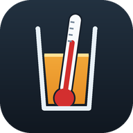

Corecție alcoolmetru
Tăria reală la 20 °C
Date măsurate
Tăria reală la 20 °C
% vol
Cum se folosește și ce precizie are
Se pune distilatul într-un vas transparent, suficient de înalt cât alcoolmetrul să plutească liber, fără să atingă pereții sau fundul. Se citește gradația la baza meniscului și se notează temperatura indicată de termometru. Cele două valori se introduc mai sus.
Tabelul acoperă 5–84 % vol și 0–30 °C. Între punctele lui, valoarea se interpolează liniar.
Sub 10 °C valorile nu provin din tabelul tipărit: sunt prelungirea calculată a tendinței lui. Abaterea estimată e sub 0,1 % vol până pe la 5 °C și ajunge la ~0,2 % vol la 0 °C, mai mare la capetele de concentrație. Aplicația te avertizează când intri în zona aceea.
Rezultatul are valoare orientativă. Pentru declarații fiscale sau verificări metrologice folosește tabelul oficial și un instrument verificat.